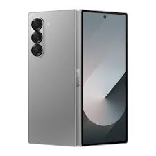

| s.no | product image | name | description | more info |
|---|---|---|---|---|
| 1 |  | mobile | A shortened, common term for a mobile phone (or cell phone). | click here |
| 1 | |
laptop | It is characterized by its clamshell design, which integrates all the essential components of a desktop computer into a single, compact unit | click here |
| 3 | |
headphones | devices that convert an electrical audio signal into sound waves that a person can listen to privately. They consist of a pair of small speaker drivers worn either on or in the ears. | click here |